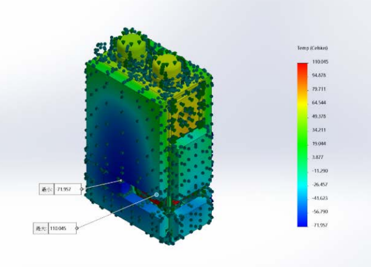

我目前就讀國立陽明交通大學機械工程學系，專注於熱流工程、熱傳分析、航太熱控與電子散熱。網站核心聚焦在可驗證的工程專題：6U CubeSat 熱控制分析。

熱傳導、對流、輻射與能量平衡分析。
LEO 熱環境、MLI、Heat Pipe、PCM 與衛星熱控架構。
建立熱模型、設定邊界條件、判讀溫度雲圖。
從工程限制建立假設，用數據驗證設計方向。
以太空垃圾偵測任務為背景，完成 6U CubeSat 陽照區熱控模擬，呈現熱負載、散熱面積與溫度分佈成果。
Low Earth Orbit
Total Heat Load
Radiating Area
Minimum Temperature